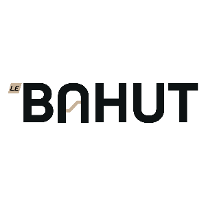

Passer au contenu principal
Ctrl
+
K

Home
Profile
Blog
Tools
Forum
To Do
Introduction
La Promo
Cette Plateforme
🎓 Scéances
Le Digital Learning
Ingénierie pédagogique (ADDIE)
Analyse
Design
Dévelopement
Implementation
Evaluation
Mécanismes d’apprentissage
Motivation
Mémorisation
Attention
Introduction à l’IA
Bonnes pratiques
Design
UX
UI
Exercices
Introduction à l’ortographe
Concevoir des « ressources chaudes »
Accessibilité
🛠 Outils
Panorama
Organiser
Supermemo
Trello
Créer
Gamma
Genially
Storyline
Animer
Digiscreen
Klaxoon
Héberger
Moodle
360 Learning
✨ Projets / Portefolio
Analyse / amélioration d’une formation
Création d’un module e-learning
Lancement / Organisation
Livrables
Experience Utilisateur
Ingénieurie Pédagogique
Escape Game
Environnement numérique d’apprentissage
🌍 Extras
Ecocystem DLM
Webinaires
REX
Appendices
Listes
Glossaire
.md
.pdf
Design
Contenu
Storyboard
Design
#
Storyboard
#
Example template Marion
Lien
Contenu
Storyboard